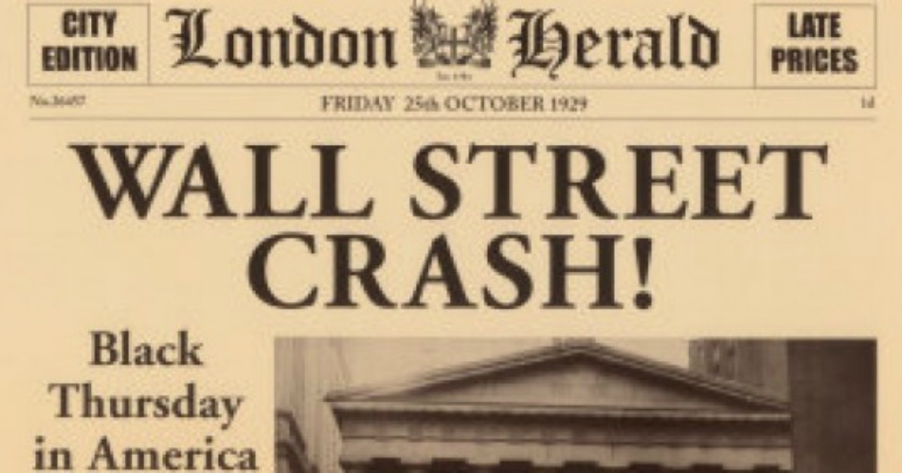

The Edwardian Age (1901–1910)
Queen Victoria died in 1901 and her son Edward VII became king. Two years later, in 1903, Emmeline and Christabel Pankhurst created a group called the WSPU to fight for women's right to vote. In 1906, the Labour Party was founded and the Liberals won the election. The Liberal government introduced important new rules: people could receive money if they were sick or old, and this was the beginning of the welfare state. However, the period was also difficult, with many workers going on strike to protest their conditions. Edward VII died in 1910 and was succeeded by George V.

The Struggle for Irish Independence (1901–1923)
Since 1801, Ireland had no independent parliament, and many Irish people wanted to govern themselves. This idea was known as Home Rule, but Britain kept refusing. On Easter Monday 1916, a group of Irish rebels started a revolt in Dublin, but the British army stopped it by force. Around 450 people died and the leaders were executed. This made Irish people even angrier at British rule. A war between Ireland and Britain followed, and it ended in 1921 with the Anglo-Irish Treaty: most of Ireland became the Irish Free State, while Northern Ireland stayed part of the UK. Shortly after, a civil war broke out within Ireland itself in 1922 and lasted until 1923. In 1949, Ireland officially became a republic.

Britain in the Twenties (1919–1929)
After World War I, Britain was a place of big differences. Some people had made money during the war, while others were very poor. Women enjoyed more freedom than before and they wore new clothes and changed their habits. But by the mid-1920s, life became harder: there was less money, interest rates were high, and coal was running out. Things got even worse in 1929, when the Wall Street Crash hit Britain as well. It was a major financial crisis that had started in the United States.